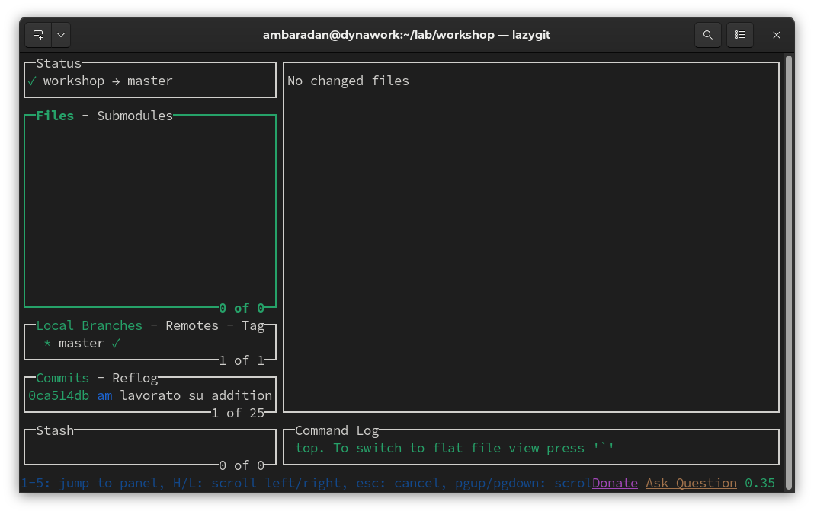
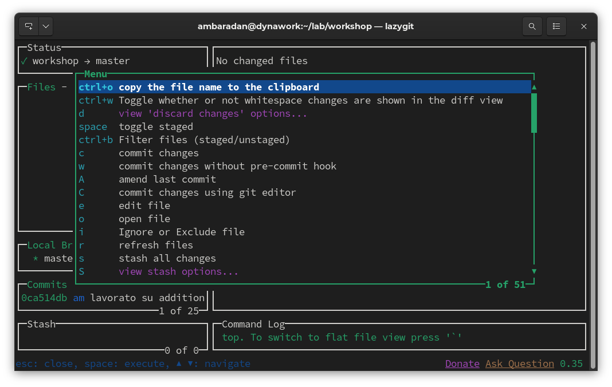
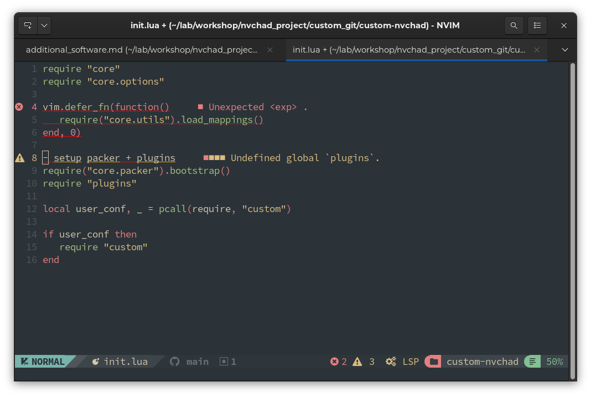
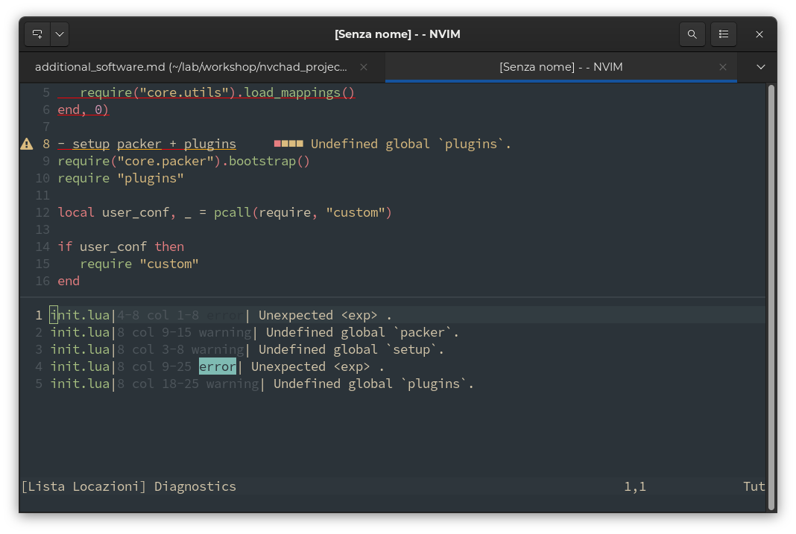
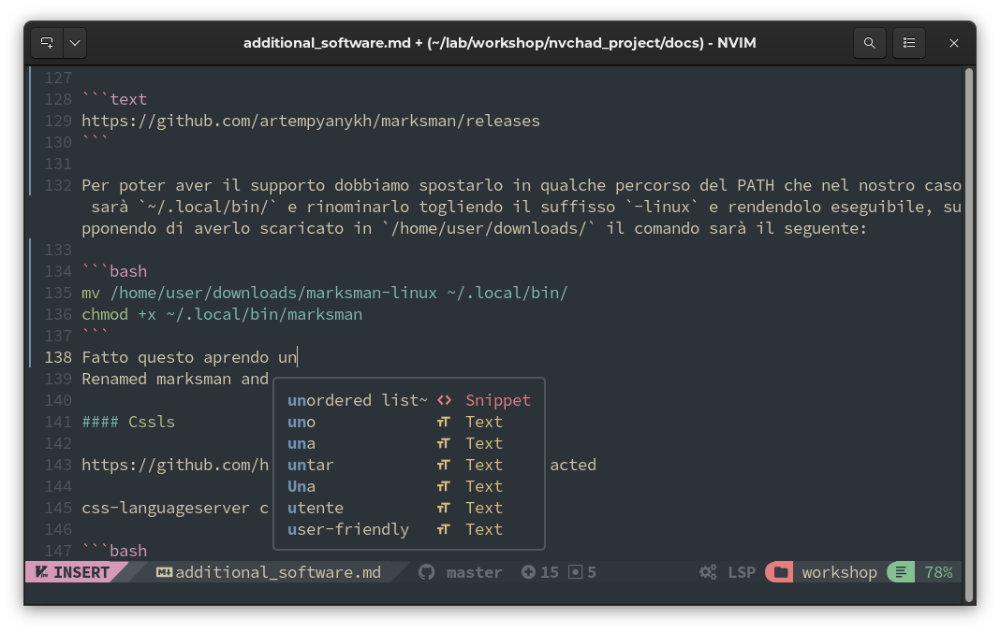
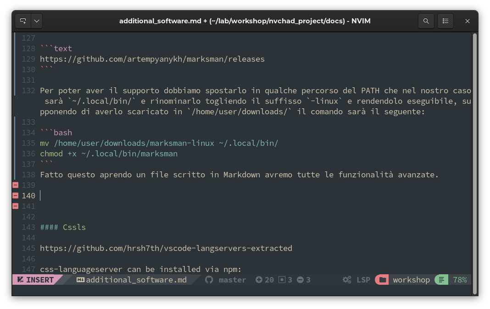
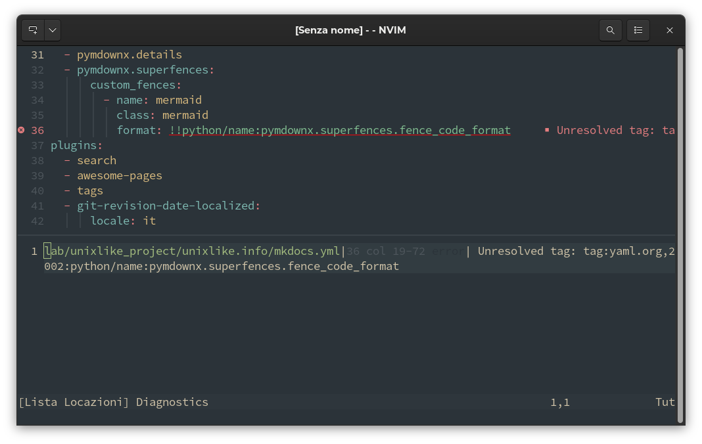

Additional Software
Additional Software Required
RipGrep
ripgrep is a line-oriented search tool that recursively searches the current directory for a regex (regular expression) pattern. By default, ripgrep respects the rules of gitignore and automatically skips hidden files/directories and binaries. Ripgrep offers excellent support on Windows, macOS and Linux, with binaries available at the for each release.
Ripgrep is a software written in Rust and is installable with the cargo utility. Note, however, that cargo is not installed by the default installation of rust so you have to install it explicitly.
dnf install rust cargo
Once the necessary software is installed, we can install it with:
cargo install ripgrep
The installation will save the rg executable in the ~/.cargo/bin folder which is outside the PATH, to use it at the user level we will move it to ~/.local/bin/.
mv ~/.cargo/bin/rg ~/.local/bin/
At this point we can verify that everything is in place with:
rg --version
ripgrep 13.0.0
-SIMD -AVX (compiled)
+SIMD +AVX (runtime)
RipGrep is needed for recursive searches with :Telescope.
Lazygit
LazyGit is an ncurses-style interface that allows you to perform all git operations in a more user-friendly way, it is required by the nvim.lazygit plugin, this plugin makes it possible to use LazyGit directly from NvChad, it opens a floating window from where you can perform all operations on your repositories, thus allowing you to make all changes to the repository git without leaving the editor.
To install it we can use the repository for Fedora, on Rocky Linux 9 it works perfectly.
sudo dnf copr enable atim/lazygit -y
sudo dnf install lazygit
Once installed we open a terminal and type the command lazygit and an interface similar to this will appear, with the x key we can bring up the menu with all available commands.


LSP
What is the Language Server protocol?
LSP is a server service that provides support for advanced editing functions, such as automatic source code completion or the "Go to Definition" function for a programming language in an editor or IDE.
The Language Server Protocol (LSP) is the product of standardizing the messages exchanged between a development tool and a language server process. The goal of LSP is to simplify this type of integration and to provide a useful framework for exposing language features to a variety of tools.
LSP in NvChad
NvChad provides an automatic mechanism for installing language servers through the nvim.lspconfig plugin.
Introduction to nvim.lspconfig
nvim-lspconfig is a collection of configurations, provided by the community, for the language client server built into the Nvim core. This plugin provides four main features:
- default startup commands, initialization options, and settings for each server.
- a root directory resolver that attempts to locate the root of the project
- an automatic command mapping that launches either a new language server or a language server for each open buffer if it is part of a traced project.
- utility commands such as LspInfo, LspStart, LspStop, and LspRestart for managing language server instances.
Installation with npm
npm is a powerful package manager and the key to the success of Node.js. It allows you to query, install, update packages. In the default installation on Rocky Linux the installation path of npm is /usr/local/ and thus requires administrator privileges to write into it, in order to use npm at user level we need to make some changes to its configuration. The modification allows us to use the full functionality of language servers while keeping the operating system tree clean.
First, let's update npm:
npm install -g npm@latest
npm --version
8.15.1
Now we check the default path of npm with:
npm config get prefix
/usr/local
What we want to do is change the directory set in the prefix variable to be able to install global packages in our home directory. We then change the variable and verify that the change has been registered with:
npm config set prefix=$HOME/.local
npm config get prefix
/home/your_username/.local
your_username clearly is an arbitrary name, instead there should be the username of the currently logged in user.
Now we need to install npm again since the one currently installed is still owned by root. The new installation will also create all the directories and files needed for user-level management.
npm install npm@latest -g
From now on, all requested installations even if requested globally will be installed in .local/bin, the path is already in the user's PATH and this will make the executables immediately available.
vscode-langserver-extracted
The package is a cumulative package that contains language servers for HTML, CSS, JSON, Markdown and ESLint, to install it we use the following command:
npm install vscode-langserver-extracted -g
Once the installation is finished, we can verify that the language servers have been properly installed with:
ls .local/bin/vscode*
.local/bin/vscode-css-language-server
.local/bin/vscode-eslint-language-server
.local/bin/vscode-html-language-server
.local/bin/vscode-json-language-server
.local/bin/vscode-markdown-language-server
In order to give NvChad a way to register them as local servers and load them as needed, we need to put them in the lspconfig.lua configuration file.
local servers = { "html", "cssls", "jsonls" }
SumnekoLua
Another very important component is the lua-language-server executable, which completely changes the experience of writing lua code, and consequently also the editing of NvChad configuration files that are written in this language. This is also the default LSP for lua in Nvchad.
L'eseguibile è fornito dal progetto SumnekoLua e può essere scaricato a questo indirizzo:
https://github.com/sumneko/lua-language-server/releases/download/3.5.1/lua-language-server-3.5.1-linux-x64.tar.gz
Once downloaded we need to unzip it somewhere and create a symbolic link of the executable in some specified folder in the PATH.
To do this we unpack the file in ~/.local/share/:
mkdir -p ~/.local/share/lua-language-server
tar xvzf lua-language-server-3.5.1-linux-x64.tar.gz -C ~/.local/share/lua-language-server
And then from the folder ~/.local/bin/ we create a symbolic link to lua-language-server
cd ~/.local/bin/
ln -s ~/.local/share/lua-language-server/bin/lua-language-server lua-language-server
At this point you will have an assistant while writing and editing files written in lua. It should be noted that the lua server does not need to be configured in the lspconfig.lua configuration file as it being the default server for NvChad works without the need for any additional configuration.

And if we use the <escape> key followed by the q key we get the list of errors found in the open file.

Marksman
Marksman is a language server for Markdown that provides auto-completion, go-to definitions, reference searching, diagnostics, etc. All types of links support completion, hover, and goto/reference definition. In addition, Marksman provides diagnostics for wiki links to detect broken references and duplicate/ambiguous titles.
The language server is provided as an executable for various architectures, in this case we will need the linux version which can be downloaded at this address:
https://github.com/artempyanykh/marksman/releases
In order to have the support we have to move it to some PATH location which in our case will be ~/.local/bin/ and rename it by removing the -linux suffix and making it executable, assuming we have downloaded it to /home/user/downloads/ the command will be as follows:
mv /home/user/downloads/marksman-linux ~/.local/bin/
chmod +x ~/.local/bin/marksman
Ora è il momento di inserirlo nei local server del file di configurazione lspconfig.lua, la riga da modificare è la seguente:
local servers = { "html", "cssls", "jsonls", "marksman" }
Having done this by opening a file written in Markdown we will have all the advanced features.

And if we try to create some errors, in our example we will create a few blank lines that in markdown are not an error but are considered to be poor formatting we will get a visual warning (the pink squares to the left of the line number) that will alert us of the problem.

yamlls
'yamlls` provides the functions of validating the entire yaml file, checking for errors and warnings regarding the code, autocompletion of commands, and hovering over a node displays the description, if available.
The language server is provided by the package yaml-language-server that can be installed with npm:
npm install -g yaml-language-server
As with the other language servers we need to add it to the local servers of our plugin:
local servers = { "html", "cssls", "jsonls", "marksman", "yamlls" }
Once installed it will spring into action whenever we open a .yaml file by making a valuable contribution to writing and debugging code.
